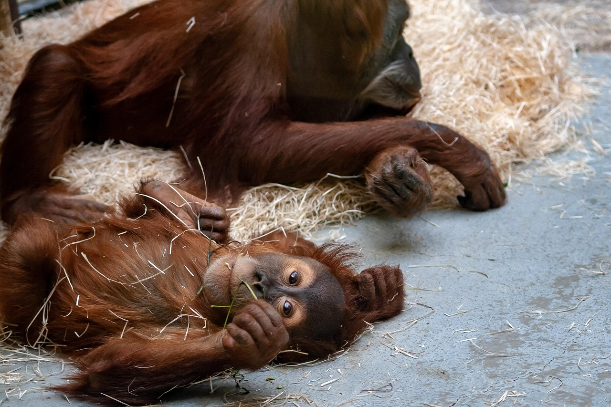

Un havre de paix pour les animaux
Le zoo d'Arcadia, situé en Bretagne près de la forêt de Brocéliande, existe depuis 1960. Il abrite une grande variété d'animaux répartis selon leur habitat naturel : savane, jungle et marais. Le bien-être des animaux est la priorité absolue du zoo.
